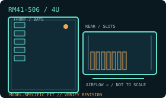

[ MODEL IDENTIFICATION // RM41-506 ]
SilverStone RM41-506 4U chassis
A 4U rack chassis with model-specific drive, PSU and expansion layouts. Match the enclosure revision, backplane and rail kit before installation.

MODEL NOTE: This record covers the RM41-506 only. Options, revision-dependent PSU support and installed bay modules may change fit; verify labels and the manufacturer manual before buying replacement parts.
Dimensions & fit specifications
| Rack units / external dimensions | 4U; 430 × 176 × 446 mm (W × H × D); 9.7 kg net. Rail kit and cables require additional rear depth. |
|---|---|
| Motherboard compatibility | SSI-CEB, ATX, Micro-ATX and Mini-ITX. |
| PSU / power compatibility | PS/2 ATX / Mini Redundant up to 200 mm deep; 2U redundant PSU support requires RM41-506 V2.0 or later. PSU is not included; verify revision and cable space. |
| Drive bays / backplane | Six external 5.25-inch; four internal 3.5-inch; two 2.5-inch (up to 15 mm); and one additional 2.5-inch (up to 15 mm) or slim optical bay (12.7 mm). This 506 variant has no listed hot-swap backplane. |
| Riser / PCIe | Seven standard-height PCI/PCIe slots. Card length is limited to 278 mm with the 5.25-inch cage or 426 mm after its removal. The chassis uses standard slot alignment; verify the board and retainer layout rather than assuming a riser kit. |
| Cooling / service clearances | One front 80 × 25 mm fan position (not supplied) and two included rear 80 × 25 mm PWM exhaust fans. CPU cooler height: 130 mm with expansion-card retainer, 148 mm without. Leave rear exhaust and PSU connection room unobstructed. |
Compatibility & service notes
Do not confuse the six 5.25-inch RM41-506 with the hot-swap RM41-H08. Removing the optical cage increases card length but eliminates optical/bay positions. Redundant 2U PSU support is only documented for V2.0+.
- Measure the complete installed depth: chassis, rack ears/slides, cable-management arm if fitted, connectors and cable bend radius.
- Maintain clear front intake and rear exhaust access; do not obstruct removable fan, drive, PSU or backplane service paths.
- Before hot-swap work, confirm the controller/backplane interface and follow the chassis manual’s power-down and ESD procedure.
Manufacturer sources
- SilverStone — RM41-506 product specificationsManufacturer product page for the six-5.25-inch revision.
- SilverStone — RM41-506 installation manual (PDF)Manufacturer manual for installation and chassis-specific clearances.